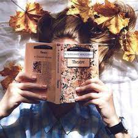

Leituras de Janeiro

Esses são os livros lidos do mês de janeiro, fui lendo aleatório, alguns eu comprei pela amazon e outros peguei da biblioteca (sim, eu vou na biblioteca, inclusive conheço todo mundo de la!!), vou deixar minha nota e um pouquinho do que achei de cada um, espero que você goste.
Fala Sério Pai
O livro conta a rotina da protagonista Maria de Lourdes com seu pai, Armando. São diversas crônicas, os capítulos são divididos
pela idade da Maria de Lourdes, a primeira metade do livro, o Armando narra contando seu ponto de vista,e depois
a Maria de Lourdes termina. Um livro feito para se dar boas risadas. Para mim, ganha 5 estrelas, apenas pelas risadas que o livro me arrancou.
Anexos
Livros favoritos
Aqui estão alguns de meus livros favoritos do momento (sempre atualizo!!), se quiser ajuda para escolher sua próxima leitura, confie em mim, meus gostos são ótimos!!!
- -Rainha Vermelha
- -Quem é Você, Alaska?
- -Minha Vida Fora de Série
- -Fazendo Meu Filme
- -Caraval
- -O Lado Mais Sombrio